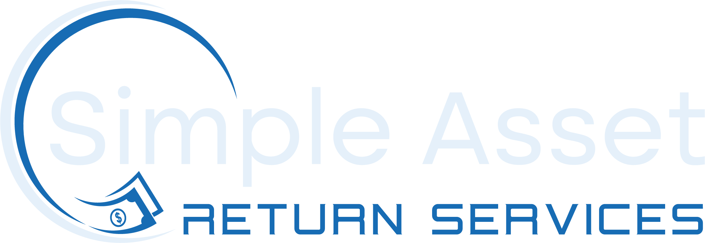

U.S. residents are missing many, many billions of dollars in unclaimed property.
Much of this missing property is turned over to state governments and treasuries, after designated periods
of time have passed.
Americans often are not aware that they are the owners or beneficiaries of unclaimed property, in spite of
state government efforts to publicize “missing money” holdings.
Or – if an individual or business does know or suspect that their property is missing – they don’t know how
to locate it or claim it. The research and claim process can seem too complicated or overwhelming.
This is where Simple Asset Return Services comes in.
We specialize in locating the rightful owners of unclaimed financial property, and reuniting the owners with
their money.
Our goal is to streamline the claim process for our clients.

Did you receive a letter from Simple Asset Return Services?
If so, thanks for visiting, and read on!
You could be on the way to receiving an unexpected windfall!
Simple Asset Return Services reviews government files of unclaimed accounts and assets in an effort to
reunite these funds with their rightful owners. These accounts are considered “unclaimed” if there has been
no activity or contact with the account owner for a year or longer, depending on the type of account and
related state laws.
For instance, a bank account holder may move but overlook updating his mailing address with the bank. If
bank statements or other correspondence are returned by the post office as undeliverable, regulations
require the bank to make additional attempts to locate the account holder. If the bank cannot reestablish
contact with the account holder after a specified period of time has passed, the account must be turned over
to the state for safekeeping.
States have the responsibility to attempt to find the rightful owners, but so much property goes unclaimed
every year that state offices are overwhelmed. Simple Asset Return Services researches state unclaimed
property records and matches the records with publicly available contact information. When we find a
match, we send a letter offering our help in reclaiming your property. We work on a contingency basis – we
don’t get paid until your property is returned to you.
-
What kinds of unclaimed property do you find?
Simple Asset Return Services focuses on financial assets (cash or cash equivalent). Some of the most common unclaimed properties include the following:
Bank and credit union accounts
Insurance refunds and insurance benefits
Mutual fund accounts
Escrow refunds
Security deposits
Retirement accounts
-
 I have heard that most unclaimed property is only a few dollars. Is it worthwhile for me to make a
claim?
I have heard that most unclaimed property is only a few dollars. Is it worthwhile for me to make a
claim?
Each of us has a personal idea of what constitutes a large sum of money. Your definition is different from your neighbors, friends, or family. And, your personal circumstances change over time – what seemed like too much effort for too little payoff in the past could be just what you require to meet a need today.
When Simple Asset Return Services contacts you, we have already determined that your unclaimed property is valued at $4000.00 or more. For many of our clients, this is enough to make a difference in their financial situations. We encourage you to contact us to discuss how we can streamline the claim process for you.
-
I’m very organized and I haven’t moved or changed jobs recently. How can there be unclaimed
property in my name?
State regulations restrict unclaimed property locators from contacting owners about assets recently turned over to the state. If you received a letter from Simple Asset Return Services, the property we identified has been in the state’s possession for several years. We have been surprised to find unclaimed property for ourselves! Life is complicated for everyone, even the most organized person, and it’s easy to lose track of every financial institution or account we have had over the years. Contact us to learn more about the unclaimed property we have found for you.
-
Is this a scam?
Great question! So many Americans are the victims of financial fraud that you are wise to be skeptical. Our background is in financial services, including fraud investigations, and your trust in us is crucial. We will not pressure you to work with us, and your personal information is held in strictest confidence. Please call us at 844- 595-9590, and we will gladly answer your questions and put your mind at ease.
Toll-free: (800) 595-9590
Email: Contact@SimpleAssetReturn.com